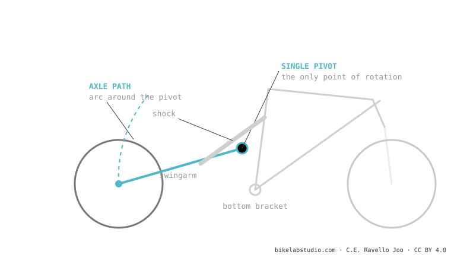

More pivots ≠ better suspension. A single-pivot is simple and reliable; a multi-link (Horst, DW-link, VPP…) gives more freedom to separate anti-squat, anti-rise and axle path — at the cost of weight, bearings and maintenance. A good single-pivot can beat a badly made multi-link. What decides it is the design, not the pivot count.
"It has 4 pivots, it must be better than the 1-pivot one." It's the reasoning brands love and that's almost always wrong. Here, without the marketing.

| Single-pivot | Multi-link | |
|---|---|---|
| Design freedom | Limited (anti-squat and axle path tied to the pivot) | High (more independent parameters) |
| Weight / parts | Light, few bearings | Heavier, more bearings |
| Maintenance | Low | Higher |
| Reliability | High, predictable | Good if well made |
| Who it's for | Mid range, non-extreme use, reliability | Demanding enduro/DH, contradictory requirements |
A well-designed single-pivot (a well-placed pivot, a good linkage for the curve) can pedal and absorb as well as many multi-links — and with fewer things to break. And a poorly optimized multi-link can feel worse despite its four or six pivots. The number of pivots is design potential, not a guaranteed result.
Not automatically. They give more design freedom, but they add weight and maintenance. A good single-pivot beats a mediocre multi-link.
Reliability, low maintenance, mid range, short travel. Multi-links shine in enduro/DH with contradictory requirements.
Tell us the models and we'll tell you which one has the better kinematics for your kind of riding — without counting pivots. Message us on WhatsApp
© 2026 BikeLab Studio. Content under CC BY 4.0: you may copy, translate and publish it, even for commercial purposes. Citation is mandatory. Without attribution, the license terminates automatically (CC BY 4.0, §6.a) and the use becomes copyright infringement: we request the removal of the content and its deindexing. · Design and ownership: Carlos Ravello Joo